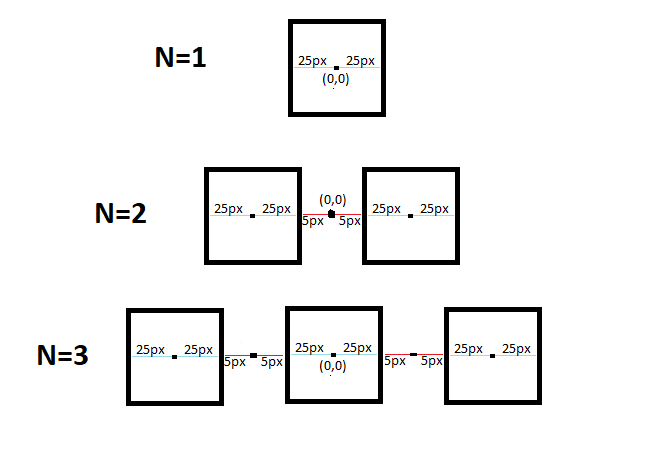

Tweak
O Tweak é uma ferramenta que permite alterar os valores númericos do código em tempo de execução.
Para utilizar, clique em Sketch -> Tweak. OBS: o código precisa já estar salvo para rodar o Tweak.
O Tweak permite uma interação dinâmica com o código, podendo ser usado para testar valores ou cores. É usado mais em situações que precisamos experimentar algum efeito, posição ou algo do gênero de forma mais geral vendo um resultado muitas vezes visual.
Debug
Já o funcionamento do Debug consiste em mostrar as variáveis que estão sendo utilizadas enquanto o programa roda. Permitindo analisar o que ocorre com cada variável do seu algoritmo durante cada linha de código. Podendo avançar linha por linha e acompanhando as alterações.
Para utilizar, clique em Debug -> Enable Debugger. Os botões Continue e Step são ativados, cria uma janela com as variáveis e seus valores atuais.
Com ele é possível marcar um breakpoint clicando em uma linha onde a execução normal do código vai parar e mostrar a ferramenta com os devidos valores das variáveis e então é possível executar o programa passo a passo, pausadamente com a ajuda dos novos botões que são habilitados.
Sua maior utilidade é a buscar de bugs (encontrar problemas) pontuais envolvendo o código do programa. Um ponto de salvação para muitos programadores aflitos.
Vamos ao código!
- Primeiramente defini a variável "n", como pedido no enunciado, para armazenar a quantidade de quadrados que desejamos inserir no centro da tela;
- Localizei o centro da tela com as variáveis xMeio e yMeio;
xMeio = width / 2;
yMeio = height / 2; - E fixei o tamanho do quadrado como 50x50;
- Criei a função "quadrado" para criar um quadrado que recebe como parâmetro o seu ponto central;
- Já temos nosso primeiro quadrado no centro da tela!
- Era necessário encontrar um tamanho para a "linha de quadrados" e para isso precisava pensar matematicamente para descobrir uma fórmula que atende-se qualquer quantidade de quadrados;
- Sabendo que metade fica depois do ponto central e a outra metade antes dele. Precisavamos apenas da metade da distancia!
 - Seria então a metade de um quadrado, multiplicado pela quantidade "n" somado com a metade do espaço entre os quadrados vezes a quantidade "n" menos 1;
Tamanho = Quantidade x 25 + (Quantidade - 1) * 5
- Agora é apenas por em um loop para desenhar cada um dos quadrados, diminuindo do "centro X" o "Tamanho";
quadrado(xMeio - Tamanho, yMeio);
- Sem esquecer de diminuir do "Tamanho" de duas metades de um quadrado mais um espaço ( 25 + 25 + 10 );
Tamanho -= 60;